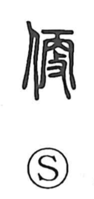

便

Uncategorized
Kun: tayori, tayasui | On: ben, bin
convenience ・ convenient ・ easy ・ letter ・ correspondence ・ urine ・ feces
Explanation
A compound of the person radical and 更. While 更 originally means “to change, alter,” Shirakawa notes that in bronze inscriptions the element shaped like 更 can depict a hand holding a whip; in the graph 駿 it shows riding a horse and urging it on with the whip. Transferred to a person, 便 evoked driving someone into action and using them at one’s convenience—hence the sense of suitability and ease. The Shuowen glosses it as “to be at ease.” From this core arise meanings such as “convenient” and “simple” (e.g., 便宜, 便乗, 便船, 便覧, 簡便), an extended sense of “message, letter” (便箋, 郵便), and, by further usage, terms for bodily eliminations (“urine,” “feces”) in compounds like 小便, 大便, and 便器.